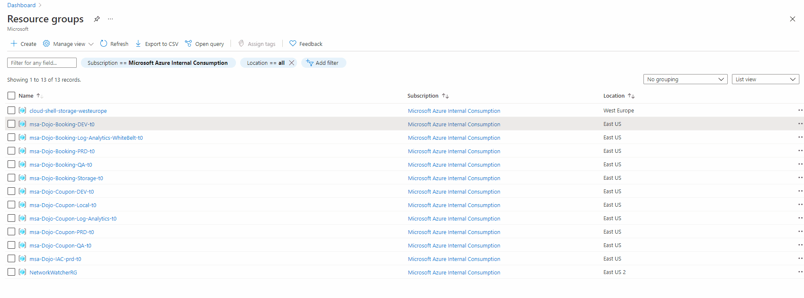

Home | Module 1 | Module 2 | Module 3 | Module 4 |
Module 1: Build, Test and Run application with Visual Studio
In this module we will clone existing Bookings (Asp .Net Web Application) git repository, fix one code analysis warning and build the code locally to make sure app is running successfully.
Exercise 1: Open the code using Visual Studio and run the application
To complete this exercise, you will clone bookings repository and run the application locally.
Prerequisites - Exercise 1
- Bookings code repository must be in place and bootstrap setup must be complete.
- Visual Studio IDE is installed.
Open the GitHub - Bookings repository.
Select
Codeand copy the HTTPS link provided. Then open your the cmd console and go to the desired location in your computer. Typegit clone {copied_url}to clone the repository locally.Open the project using Visual Studio.

Before making any changes, lets create a new branch from main branch. We will make use of the same branch across all 4 modules, so note the branch name. Select main from bottom left, select Create new branch, enter branch name and click enter.
Go to Web.config in the solution explorer from
SmartHotel360.Registration.Web->Web.Config. Here update these following keys' values and save:- SqlServerName:
{cus_prefix}-bookings-server-dev-{team_suffix} - DatabaseName:
bookings-db-dev - KeyVaultUri:
https://{cus_prefix}-bookingkvdev{team_suffix}.vault.azure.net/ - ServicePrincipalClientId: Lab Access Information
- ServicePrincipalPassword: Lab Access Information
- TenantId: Lab Access Information
- SqlServerName:
Before running the application locally, go the Azure subscription and, for the SQL server in the DEV resource group, add your IP address to the firewall.

We will run the application on Visual Studio and ensure its up and running. Select
IIS Express (Microsoft Edge). This will take about 5 minutes when running the project for first time.Once the application is running you should be able to see Home page of Smart hotel in default browser.
Once you have explored the application, go back to the Visual Studio, and stop the application.
Note
If you build the solution for the first time, there might be errors stating missing Nuget packages. From the Visual Studio | Tools menu | NuGet Package Manager | Package Manager Settings | Options dialog box | In the left pane select Package Sources, check or add package source name: nuget.org, Source: https://www.nuget.org/api/v2/.
Exercise 2: Run and fix local code analysis error
In this exercise, we will cover Code Analysis as part of Security Static code analysis in Integrated Development Environment. For the types of problems that can be detected during the software development phase itself as it provides immediate feedback to the developer on issues they might be introducing into the code during code development itself. This immediate feedback is very useful, especially when compared to finding vulnerabilities much later in the development cycle.
Prerequisites - Exercise 2
- Exercise 1 must be completed with application running successfully on Visual Studio.
- Visual Studio IDE is installed.
To enable Code analysis for SmartHotel360.Registration.Web, right click on SmartHotel360.Registration.Web->Click on Properties as shown below:
Check the Enable Code Analysis on Build check box and select the ruleset from the browse button as shown below:
To run Code Analysis on SmartHotel360.Registration.Web project, Right click SmartHotel360.Registration.Web project -> Build.
Select N warnings by opening the tab "Errors" on the Output window. You should be able to see list of warnings (SA/CA/CS type) in Error List as shown below once Code analysis scan is successful.
Code Analysis rules can also be configured to show up as errors if desired. The warnings produced by Code Analysis provide a wealth of information including a unique ID (such as CS1591 in the screenshot above), a description of the problem or suggested fix, and the file location of the offending code.
The Error List window contains a search box where you can filter code analysis results on warning number, text in the title or message of the warning, as well as filename or function name.
Enter
CS1591into the search box as highlighted below.Sort the list of warning by File and double-click the first result shown in the Error List window to load the specified location in the code editor.
Now we will perform the code fix necessary to resolve the warning. For CS1591, we are told that we should update the Missing XML Documents. Resolve the warning by updating the summary. Just type /// and add the name of the class as shown in the video.

Save the file and verify that the warning disappears as expected. There should be one less warning than before.
Exercise 3: Run unit tests
To complete this exercise, you will run the already written unit tests for the bookings application on Visual Studio.
Prerequisites - Exercise 3
- Exercise 2 must be completed with at least one code analysis errors fixed.
- Visual Studio IDE is installed.
To open Test Explorer Window, go to
Test menu -> Test Explorer.Right click and build the SmartHotel360.Registration.Web.Tests.
To run the unit Test go to Test Explorer Window and right click on SmartHotel360.Registration.Web.Tests.BusinessLogicUnitTests -> Run to run the selected tests.
Once the test ran successfully, you should be able to see the status as Green for all the seven unit tests.
Exercise 4: Commit and Push changes
To complete this exercise, you will stage, commit and push the changes that you made in the previous exercises.
Prerequisites - Exercise 4
- Exercise 3 must be completed and all unit tests must pass.
- Visual Studio IDE is installed.
Now, lets commit and push our changes into the local branch we created. Please note, we should remove service principal information from the file web.config, since this contains secrets which should not be exposed, and are only required to run the application locally.
Select the Git Changes tab next to Solution Explorer. If you don’t see the Git Changes tab, open it from the menu by View -> Git Changes. Review the changes and, if happy, stage them by clicking in the + button. Enter an appropriate commit message and select
Commit Staged. Then push these changes onto the branch by clicking on the push icon next to the branch name at bottom of Visual Studio.
Key Takeaways
- You can easily clone a work with your repository using your day-to-day IDE.
- Visual Studio can be used to make code changes, run and test application.